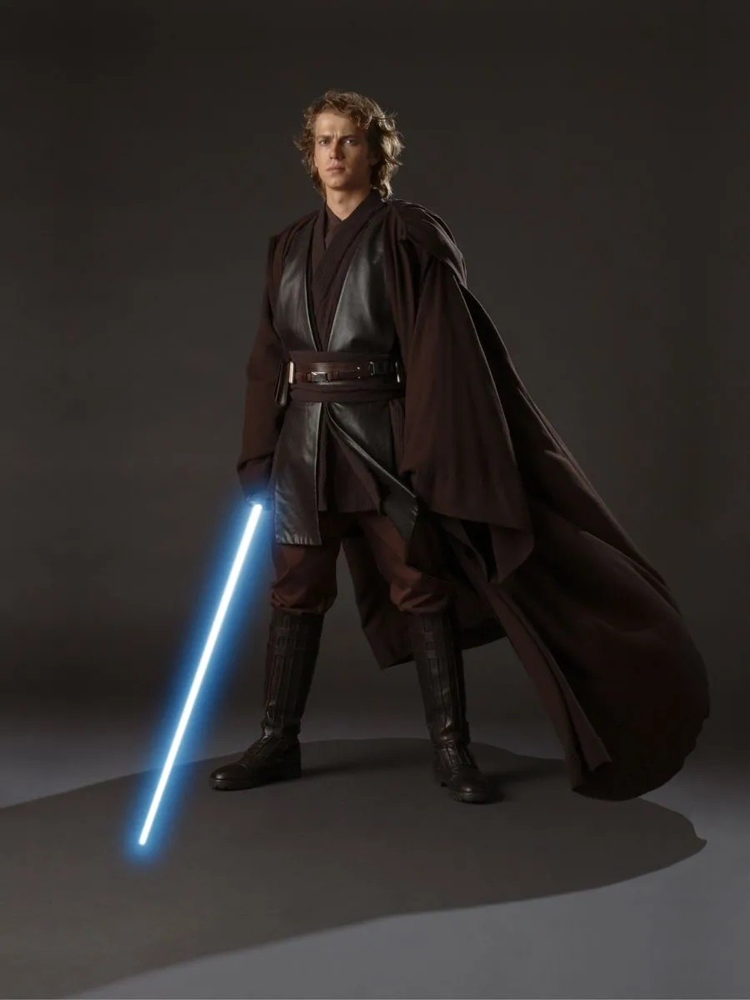

Обі Ван Кенобі
Обі Ван Кенобі був мудрим і досвідченим джедаєм, який навчався у майстра
Йоди. Він зіграв ключову роль у тренуванні Енакіна Скайвокера, який
пізніше став Дартом Вейдером. Після падіння Республіки, Обі Ван став
наставником Люка Скайвокера, допомагаючи йому зрозуміти силу і його
призначення.

Енакін Скайвокер
Енакін Скайвокер був талановитим джедаєм, який вважався обраним, щоб
принести баланс у Силу. Однак його страх втрати близьких і бажання влади
призвели його до темної сторони, де він став Дартом Вейдером. Його
історія є трагічною, але в кінці він знаходить спокуту через свого сина,
Люка Скайвокера.
